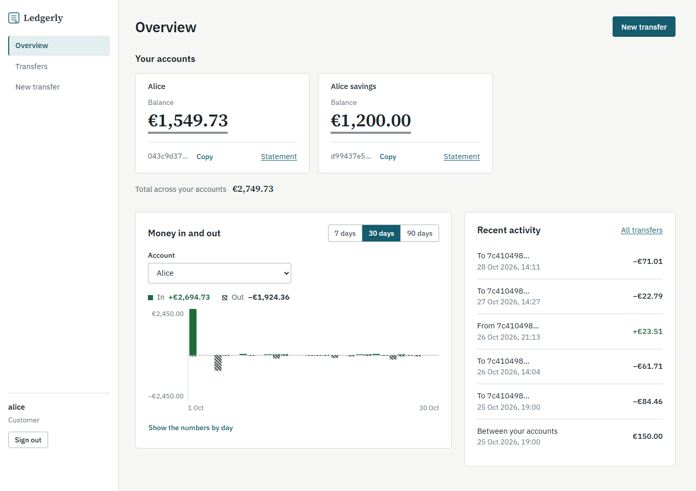
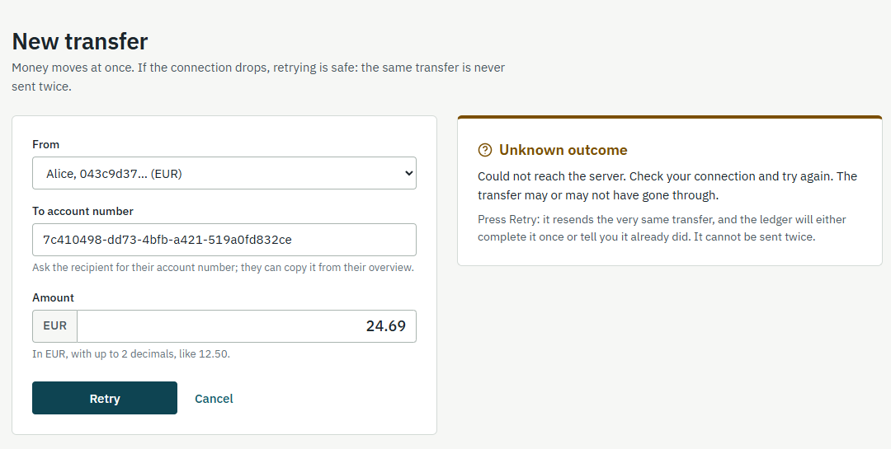
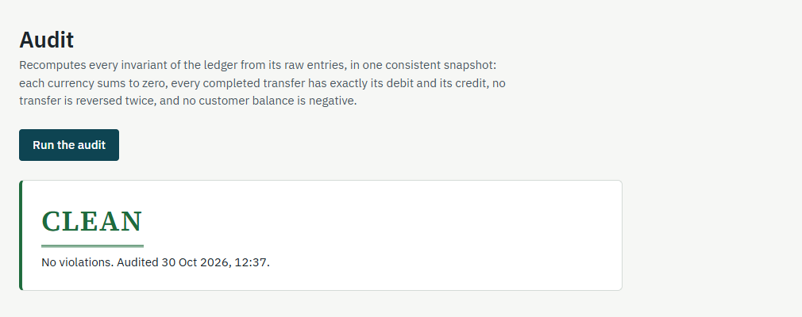

Ledgerly
Proyecto principal
Núcleo bancario con libro mayor de doble entrada. Toda transferencia genera dos apuntes que suman cero, el saldo se calcula a partir de los apuntes en vez de guardarse, las operaciones son idempotentes y la concurrencia está probada contra PostgreSQL real. La interfaz en Angular la sirve el propio Spring Boot.
Lo cubren 487 tests de backend, 100 de frontend y 11 de extremo a extremo con Playwright.
- Java 21
- Spring Boot
- Angular
- PostgreSQL
- Docker
Ver código en GitHub Abrir la demo
El primer acceso puede tardar un par de minutos (plan gratuito).

